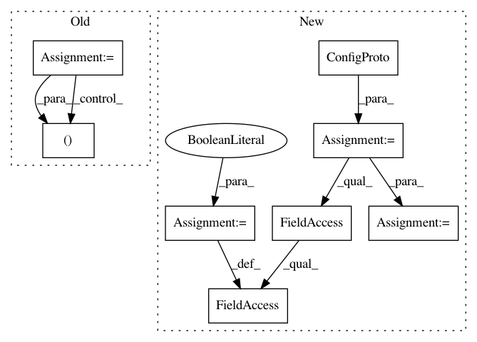

c99295e1903952b3b806c4fd641e28f852b17c36,autokeras/utils.py,ModelTrainer,train_model,#ModelTrainer#,101
Before Change
flow = self.datagen.flow(self.x_train, self.y_train, batch_size)
else:
flow = None
for _ in range(constant.MAX_ITER_NUM):
if constant.DATA_AUGMENTATION:
self.model.fit_generator(flow, epochs=constant.EPOCHS_EACH)
else:
self.model.fit(self.x_train, self.y_train,
batch_size=batch_size,
epochs=constant.EPOCHS_EACH,
verbose=self.verbose)
loss, _ = self.model.evaluate(self.x_test, self.y_test, verbose=self.verbose)
if self._converged(loss):
break
return self.minimum_loss
def extract_config(network):
After Change
callbacks = [terminator, lr_scheduler, lr_reducer]
if constant.LIMIT_MEMORY:
config = tf.ConfigProto()
config.gpu_options.allow_growth = True
sess = tf.Session(config=config)
backend.set_session(sess)
try:
if constant.DATA_AUGMENTATION:
flow = self.datagen.flow(self.x_train, self.y_train, batch_size)
In pattern: SUPERPATTERN
Frequency: 3
Non-data size: 8
Instances
Project Name: keras-team/autokeras
Commit Name: c99295e1903952b3b806c4fd641e28f852b17c36
Time: 2018-04-18
Author: jhfjhfj1@gmail.com
File Name: autokeras/utils.py
Class Name: ModelTrainer
Method Name: train_model
Project Name: hanxiao/bert-as-service
Commit Name: dd3c13d51975d7ca569681dd19639473d19e8e85
Time: 2018-12-14
Author: hanhxiao@tencent.com
File Name: server/bert_serving/server/__init__.py
Class Name: BertWorker
Method Name: run1